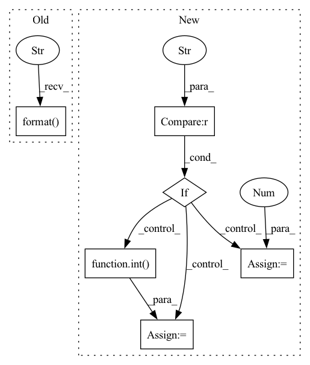

Pattern ID :29433
Before Change
for shift in rand_list:
for key, value in expt.items():
setattr(args, key, value)
setattr(args,"final_state_range", "[[{},{}],[-0.25,0.25]]".format( 4.5+shift, 5.0+shift) )
stats, info = ex.main(args)
After Change
for expt in expts:
controller_name = expt["controller"]
if controller_name == "discrete_quad_avoid_origin_maneuver_2" :
num_nodes = 40
else:
import re
num_nodes = sum([int( s) for s in re.findall(r"\d+", controller_name)])
for key, value in expt.items():
setattr(args, key, value)
stats, info = ex.main(args)In pattern: SUPERPATTERN
Frequency: 3
Non-data size: 6
Instances Fragment ID: 87143737
Project Name: mit-acl/nn_robustness_analysis
Commit Name: 3d2cd1f1bff1e6e54e76b61e120625ef91604889
Time: 2023-01-31
Author: nrober1122@gmail.com
File Name: nn_closed_loop/backward_experiments.py
M Class Name: NNScalability
N Class Name: NNScalability
M Method Name: run(1)
N Method Name: run(1)
M Parent Class: Experiment
N Parent Class: Experiment
M File Name: nn_closed_loop/backward_experiments.py
N File Name: nn_closed_loop/backward_experiments.py
M Start Line: 818
M End Line: 898
N Start Line: 818
N End Line: 899
Before Change
_TENSOR_MODEL_PARALLEL_GROUP = group
if dist.get_rank() == 0:
print("> initialize tensor model parallel with size {}".format( tensor_model_parallel_size_) )
print("> initialize data parallel with size {}".format(data_parallel_size_))
After Change
colossalai.logging.disable_existing_loggers()
if tensor_model_parallel_size_ == None:
if "WORLD_SIZE" in os.environ :
tensor_model_parallel_size_ = int( os.environ["WORLD_SIZE"])
else:
tensor_model_parallel_size_ = 1
if torch.torch.distributed.is_initialized():
_logger = colossalai.logging.get_dist_logger()
_logger.error( Fragment ID: 87143736
Project Name: hpcaitech/fastfold
Commit Name: aa140059ee9898496b7a110d7eb2523cf6938836
Time: 2022-04-11
Author: csg19971016@gmail.com
File Name: fastfold/distributed/core.py
M Class Name: AnonimousClass
N Class Name: AnonimousClass
M Method Name: init_dap(1)
N Method Name: init_dap(1)
M Parent Class:
N Parent Class:
M File Name: fastfold/distributed/core.py
N File Name: fastfold/distributed/core.py
M Start Line: 20
M End Line: 53
N Start Line: 16
N End Line: 39
Before Change
uuid = start(device, ld_helper, int(epochs))
print("\n")
print("A new NC vs AD model has been trained under the tag: {}".format( uuid) )
print("\n")
print("Would you like to evaluate it? You must do so for it to be saved to the database.")
print("\n")After Change
print("2. sMCI v pMCI : Distinguishing between subjects with static mild cognitive impairement and progressive mild cognitive impairement.")
print("\n")
choice = input("Please enter your choice [(1),2]:")
if choice == "" : choice = 1
else: choice = int( choice)
if choice == 1: task = Task.NC_v_AD
else: task = Task.sMCI_v_pMCI
Fragment ID: 87143738
Project Name: mcspooder/camull_net
Commit Name: 654a213fce48e4dab18c655c3a69eef8cd7e07e5
Time: 2022-06-22
Author: danny@remy
File Name: camull_cli.py
M Class Name: AnonimousClass
N Class Name: AnonimousClass
M Method Name: train_new_model_cli(1)
N Method Name: train_new_model_cli(1)
M Parent Class:
N Parent Class:
M File Name: camull_cli.py
N File Name: camull_cli.py
M Start Line: 217
M End Line: 237
N Start Line: 226
N End Line: 254